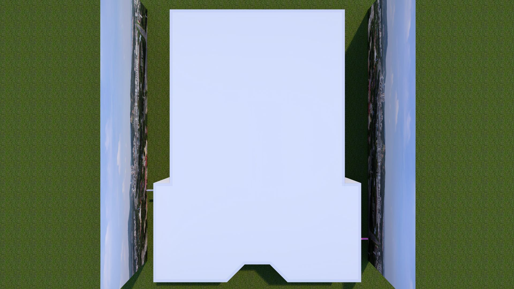
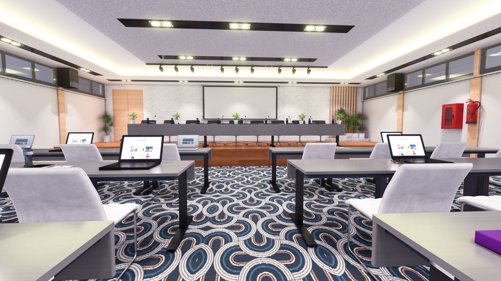
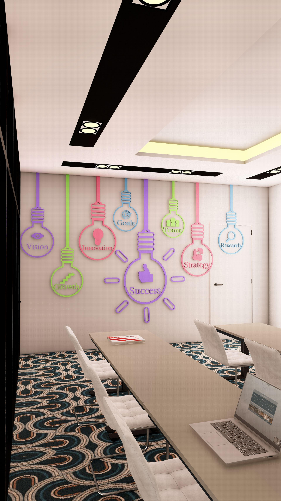
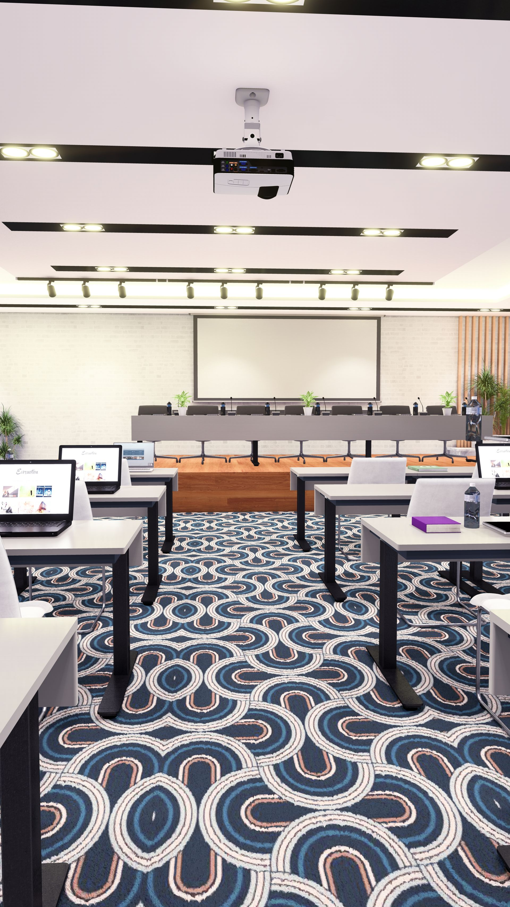
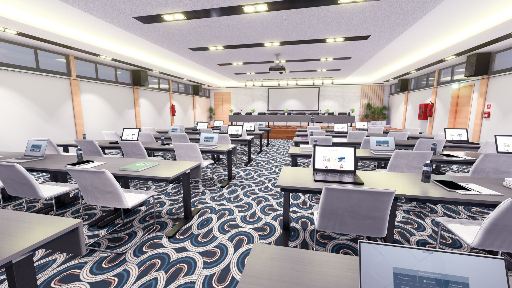
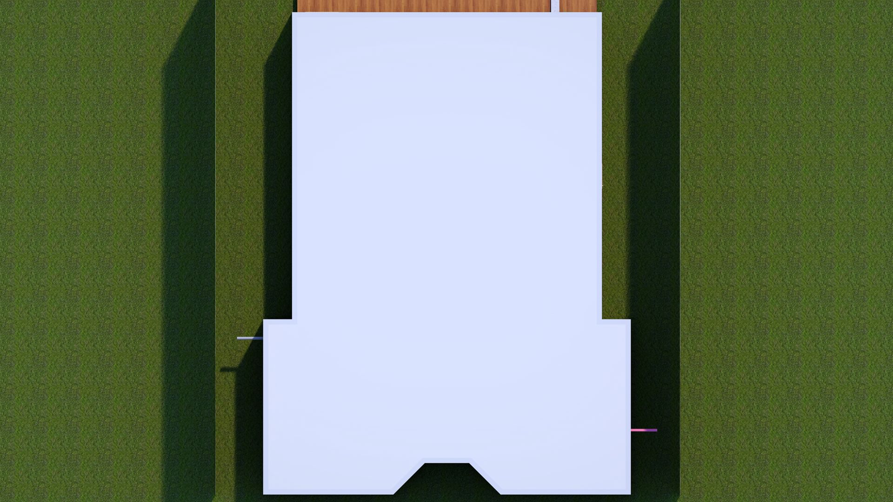
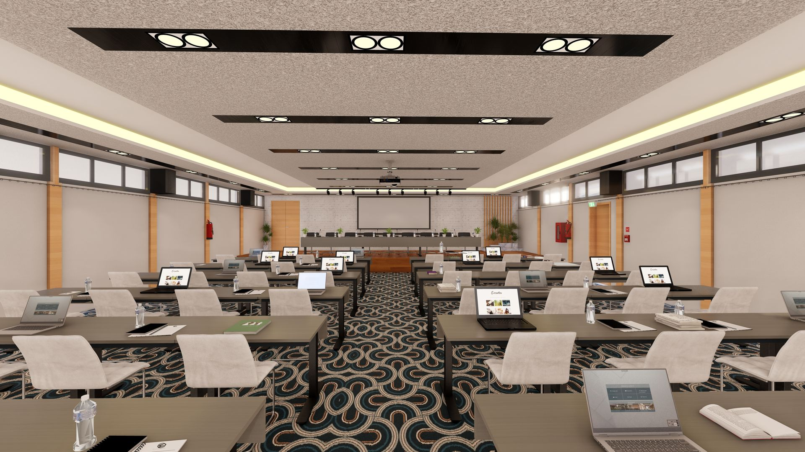

Intelligence Spatiale et Connectivité
Ce projet de salle de réunion haut de gamme explore la synergie entre technologie et confort architectural. Conçu pour favoriser la collaboration et la prise de décision, l'espace intègre des solutions acoustiques discrètes, un éclairage dynamique et un mobilier ergonomique sur mesure.
L'esthétique minimaliste, soulignée par des lignes de lumière continues et des matériaux nobles, crée une ambiance de travail à la fois solennelle et stimulante. Ce projet démontre une maîtrise de la gestion technique des espaces de travail modernes (smart office), alliant esthétique épurée et fonctionnalité maximale.






